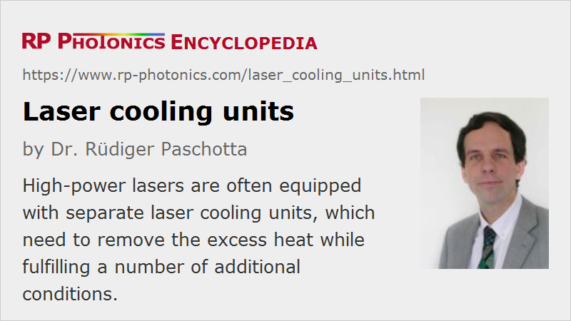

Laser Cooling Units
Definition: devices used for cooling of high-power lasers
German: Laser-Kühlgeräte
How to cite the article; suggest additional literature
Author: Dr. Rüdiger Paschotta
Particularly in high-power lasers, there is a substantial amount of heat generated particularly in the laser gain medium due to incomplete conversion of pump power into optical output power. In case of diode-pumped lasers, the used laser diodes also generate heat. In order to avoid excessive temperatures, which could degrade the performance or even damage the laser, that heat has to be removed from the device. For that purpose, special laser cooling units for active cooling are available.
Particularly powerful coolers are required for large high power lasers as used for laser welding and cutting, for example. This includes both solid-state lasers and gas lasers such as CO2 lasers. Generally, the required cooling capacity does not only depend on the generated laser power, but also on the wall-plug efficiency of the system: the less efficient the system is, the more heat is generated.
For low-power lasers, passive cooling e.g. through an attached heat sink and/or convection of air is often sufficient. In some cases, the cooling is assisted by a thermo-electric cooler (Peltier cooler), which “pumps” heat from the laser to a heat sink or radiator. The latter gets sufficiently effective only for sufficiently high temperatures.
Separate Cooling Units
For dealing with high thermal powers, one often uses separate laser cooling units, which typically supply the actual laser device with a flow of cooling water at a more or less stable and not too high temperature while taking back water at an increased temperature level. Such cooling units are often placed on wheels, so that they can be relatively easily moved around in a room. They need to be connected to the laser with more or less flexible water tubes, potentially also to an external water supply, and to the electricity grid – often with thick cables for 3-phase AC power.
The excess heat may be removed in different ways, e.g. using a flow of tap water, which however can lead to significant operation cost. It is common to use closed-loop water circulation systems, containing a chiller in conjunction with a heat exchanger and a ventilator, dissipating the heat into outside air, or for low cooling powers sometimes the air within the room. The chiller is a device similar to what is used in a household refrigerator (a kind of heat pump), but usually much more powerful. Despite the often significant electricity consumption of the chiller and the required water pumps, the operation cost of recirculating chiller systems is usually lower than for systems consuming tap water.
There are also cases where a laser cooling unit can dispose the excess heat in a central cooling system of the building. Its main function is then to provide cooling water with the required flow and temperature for the laser, independent of temperature fluctuations of the central system.
Remote laser cooling units may have cooling capacities of several kilowatts, dozens of kilowatts or even more. For some devices, it is possible to combine several of them to obtain even higher cooling capacities. However, one needs appropriate precautions to properly distribute the cooling load over several devices.
In principle, one can also reuse the generated heat by feeding it into a heating system of the building, for example, in order to save energy. However, so far that happens relatively rarely, mainly because of the difficulties to connect the devices.
In some cases, a laser cooling unit only provides filtered cool air to the laser and possibly to its power supply.
Various Important Aspects
Temperature Stability
Particularly when using laser diodes, it is often important to maintain a stable cooling temperature, because that can affect the emission wavelength. Frequently, laser diodes have a temperature coefficient of the order of 0.3 nm/K, so that the temperature change by several kelvin may change the emission wavelengths by more than 1 nm. Given the small pump absorption bandwidth of some laser crystals, this can lead to a reduction of pump absorption and therefore a serious degradation of laser power. In such cases, it may be necessary to carefully optimize the temperature of the cooling water for optimum output power of the laser. Fiber lasers are much less demanding in that respect due to their large pump absorption bandwidth.
One may use an interlock system to automatically switch off the laser when it is found that the cooling water flow and/or its temperature is not appropriate.
Vibrations
Laser cooling units often produce substantial vibrations, which might disturb the operation of a laser system or other devices in their surroundings. Sometimes, such cooling units are therefore operated in a separate room, which also makes it easier to keep the laser room clean when doing maintenance on the cooling system. Some level of vibrations may be transmitted through the water tubes between the laser and the cooling unit, but such effects can be minimized.
Chemical Properties of the Cooling Water for Avoiding Corrosion and Clogging
For reliable long-term operation of the laser, more is needed than only a reliable supply of cooling water with a sufficiently high flow and a stable temperature. In particular, it is necessary to keep the water conditioned such that the whole cooling system can remain functional. For example, there can be corrosion processes degrading various materials in the system if the chemical composition of the water is not appropriate. As a consequence, small particles may go with the water flow and finally be deposited in fine structures of a cooling system, increasingly degrading the thermal contact of the cooled parts with the cooling water. Particularly sensitive in that respect are microchannel coolers, because their very small channels may easily be clogged by a moderate amount of particles.
Note that it can already be problematic if some laser diodes get hotter than others, so that the overall emission spectrum gets broader, and complete pump absorption is no longer possible for any cooling water temperature.
It is important to know that certain electrochemical corrosion processes can occur when inappropriate combinations of different metals are used in a system. Therefore, a certain laser cooling unit may be absolutely suitable for one particular laser, while leading to a gradual degradation when applied to another laser.
In order to avoid such problems, it is important to make sure that a laser cooling system fully meets the specification of the manufacturer, who might otherwise reject liabilities for defects. (To avoid liability problems, the cooling unit should ideally be supplied by the same manufacturer as the laser.) Cooling water specifications may include aspects like the range of allowable pressures, the required water flow and temperature, the pH value and the salt content of the water.
Cryogenic Cooling
Special laser cooling units are required for cryogenic lasers, operated particularly low temperatures. An ordinary chiller will usually not be sufficient; one may use special Stirling coolers, for example, to reach temperatures below 100 kelvins. On the other hand, the cooling powers of such devices are usually fairly small.
Suppliers
The RP Photonics Buyer's Guide contains 7 suppliers for laser cooling units.
Questions and Comments from Users
Here you can submit questions and comments. As far as they get accepted by the author, they will appear above this paragraph together with the author’s answer. The author will decide on acceptance based on certain criteria. Essentially, the issue must be of sufficiently broad interest.
Please do not enter personal data here; we would otherwise delete it soon. (See also our privacy declaration.) If you wish to receive personal feedback or consultancy from the author, please contact him e.g. via e-mail.
By submitting the information, you give your consent to the potential publication of your inputs on our website according to our rules. (If you later retract your consent, we will delete those inputs.) As your inputs are first reviewed by the author, they may be published with some delay.
See also: high-power lasers, cryogenic lasers
and other articles in the category lasers
|  |
If you like this page, please share the link with your friends and colleagues, e.g. via social media:
These sharing buttons are implemented in a privacy-friendly way!